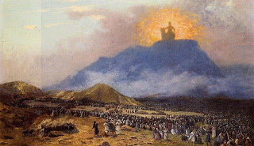

Kiddushin 30 - Teaching Torah to one's Grandchildren
Rabbi Chiya bar Abba encountered Rabbi Yehoshua ben Levi, who had hurriedly thrown a sheet upon his head and was bringing his grandchild to the synagogue for this Torah lesson. He asked, "What is all this rush about?"
Rabbi Yehoshua ben Levi replied, - is it a small thing to fulfill that which is written in Shema, "You shall make them known to your children and grandchildren," and next to this, "The day that you stood before Hashem your God at Chorev?" We see from here that teaching Torah to one's grandchild is tantamount to receiving Torah at Sinai.